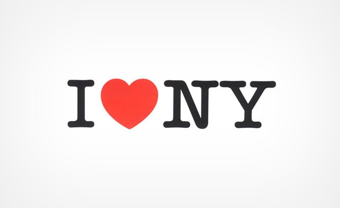
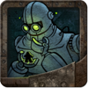

In the beginning...
I was born in a quaint little town called Ronan in western Montana, population 1,912 (people), 6,785 bears. I'm the youngest in my family with two brothers and a sister. Growing up next to the beautiful Rocky Mountains and Flathead Lake was great, and I managed to make it through without a single bear attack!
Getting Educated...
I always had an interest in art and design, so after graduating from high school I went to BYU-Idaho and got my bachelors degree in graphic designer.

During college I was able to spend a few months in an internship in the big apple with Milton Glaser (Designer of the I Love NY logo). One of my favorite quotes from him is:
"I don't love the business or the world... I love to make and create, and that has brought me from my childhood until now."
And then there were more...
During college I got married to my best friend from high school, and now we have two little boys that keep us very happy and busy. One of them was born just last week! Yay us!!
Work, Work, Fun!

After college I worked for a couple years at a small design firm in Stamford Connecticut (across the street from Dunder Mifflin). During this time my brother was gradually growing his own business/website. Things took off for him, and we decided to join forces and start having even more fun together by creating a website about board games, a hobby we both enjoy. After moving to Albuquerque I also became an avid cyclist and usually spend saturday mornings on the road bike.